These have results per 1-second interval for: insert rate (IPS), max insert reponse time, delete rate (DPS), max delete response time, query rate (QPS) and max query response time.
The results are from 1 client while the test may have N clients where N > 1.
Deletes might not have been enabled for this benchmark step, in which case those graphs will show zero values.
The test is run with a rate limit for the number of inserts/s. In some cases the DBMS is unable to sustain that rate. When a DBMS can sustain that rate IPS will be a horizontal line.
Contents
pg163_def.cx9a2_c8r32: IPS
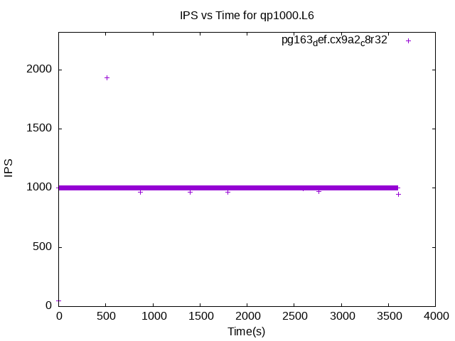pg163_def.cx9a2_c8r32
pg163_def.cx9a2_c8r32: max insert response time
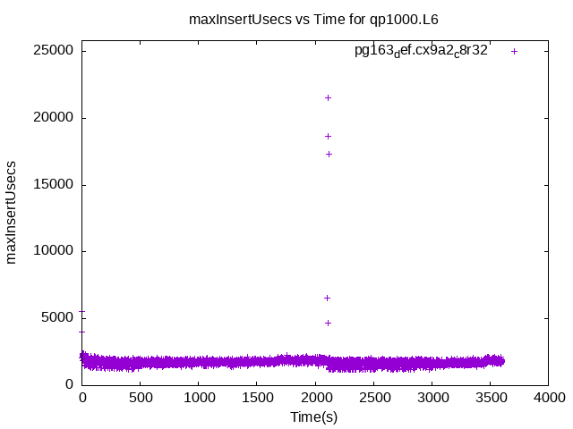pg163_def.cx9a2_c8r32
pg163_def.cx9a2_c8r32: DPS
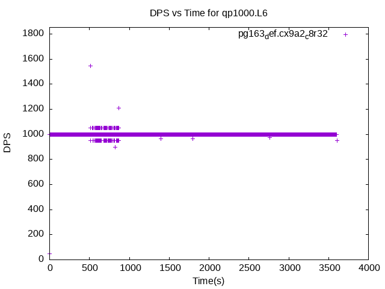pg163_def.cx9a2_c8r32
pg163_def.cx9a2_c8r32: max delete response time
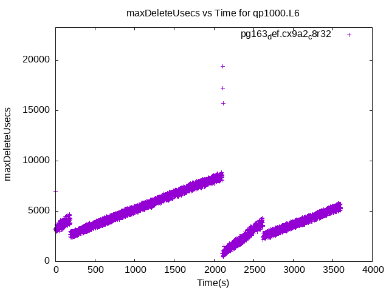pg163_def.cx9a2_c8r32
pg163_def.cx9a2_c8r32: QPS
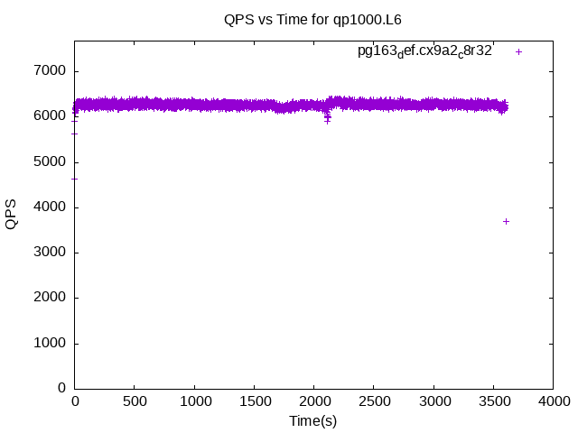pg163_def.cx9a2_c8r32
pg163_def.cx9a2_c8r32: max query response time
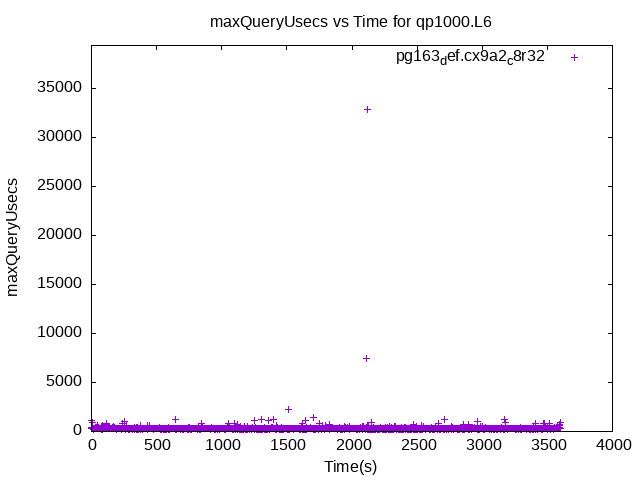pg163_def.cx9a2_c8r32
pg163_def.cx9a2nofpw_c8r32: IPS
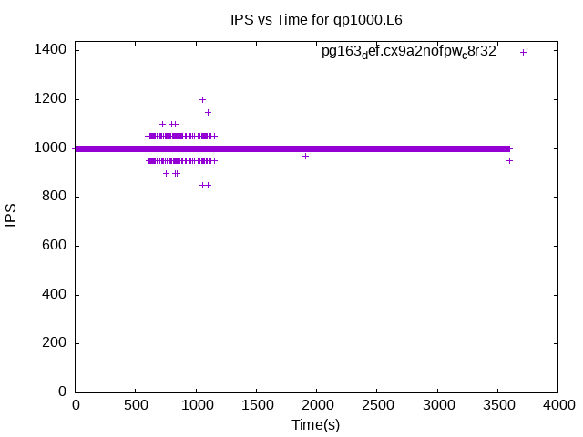pg163_def.cx9a2nofpw_c8r32
pg163_def.cx9a2nofpw_c8r32: max insert response time
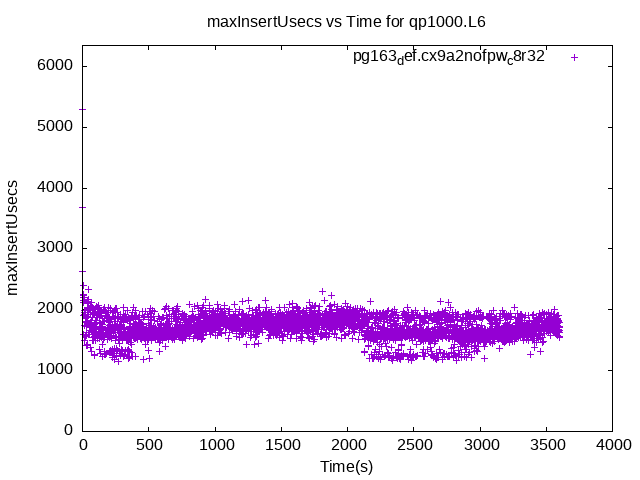pg163_def.cx9a2nofpw_c8r32
pg163_def.cx9a2nofpw_c8r32: DPS
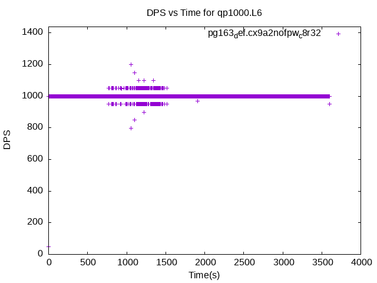pg163_def.cx9a2nofpw_c8r32
pg163_def.cx9a2nofpw_c8r32: max delete response time
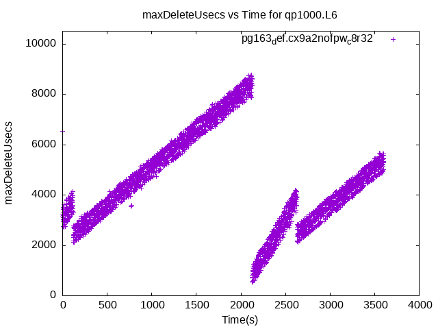pg163_def.cx9a2nofpw_c8r32
pg163_def.cx9a2nofpw_c8r32: QPS
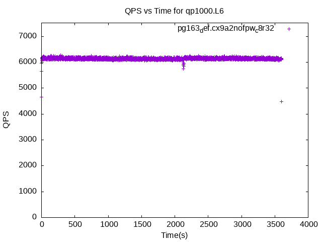pg163_def.cx9a2nofpw_c8r32
pg163_def.cx9a2nofpw_c8r32: max query response time
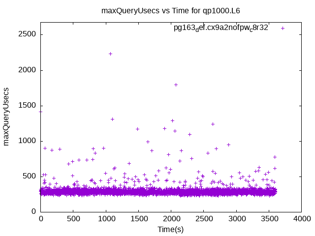pg163_def.cx9a2nofpw_c8r32